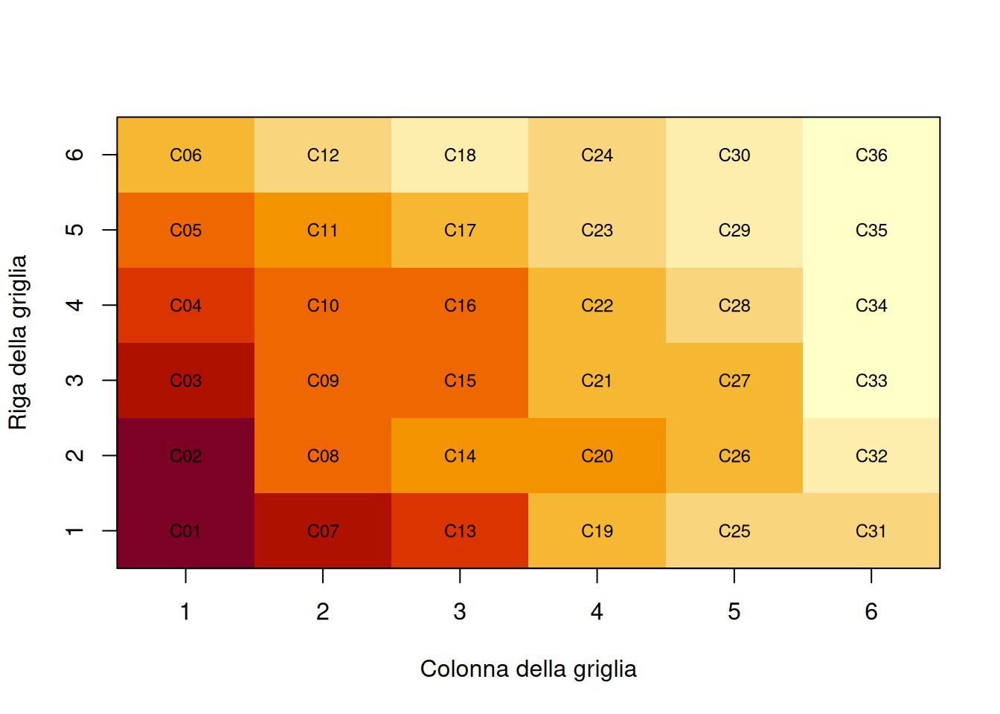
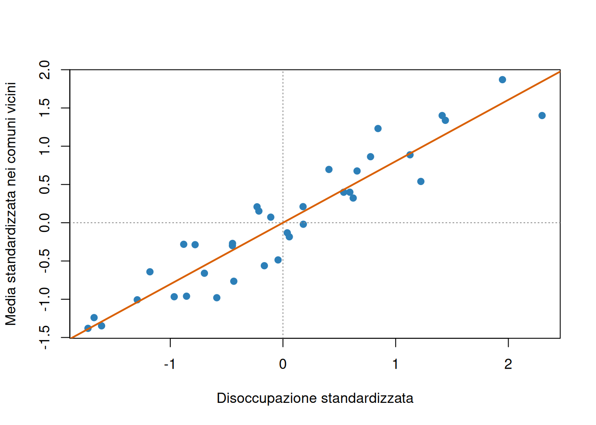

La disoccupazione di un comune può essere collegata a quella dei comuni vicini. Le persone attraversano i confini amministrativi per lavorare, le imprese condividono infrastrutture e mercati, una politica locale può produrre effetti oltre il territorio che l’ha adottata. Per questo, due unità geograficamente prossime non sono sempre osservazioni indipendenti.
I dati spaziali associano informazioni statistiche a una posizione o a una geometria. In questo capitolo considereremo soprattutto dati areali: comuni, province o regioni osservati nello stesso periodo. L’obiettivo è imparare a:
definire quali territori sono vicini;
descrivere la somiglianza spaziale con l’indice di Moran;
riconoscere dipendenza spaziale nei residui di una regressione;
distinguere un modello con interazioni tra esiti, SAR, da un modello con errori spazialmente correlati, SEM;
interpretare con cautela coefficienti e ricadute territoriali.
Una mappa è un utile punto di partenza, ma non è un modello. Mostra dove si concentra un fenomeno; da sola non stabilisce perché i territori vicini si somiglino, né dimostra che uno influenzi l’altro.
9.1 Dalla tabella alla struttura spaziale
In una normale tabella ogni riga rappresenta un’unità e ogni colonna una variabile. Un dato spaziale aggiunge una geometria: un punto per la sede di un servizio, una linea per una strada o un poligono per il confine di un comune. La geometria permette di calcolare distanze, contiguità e relazioni di vicinato.
Prima dell’analisi occorre documentare almeno:
l’unità territoriale e il periodo di riferimento;
il sistema di coordinate e la qualità dei confini;
la definizione e l’unità di misura delle variabili;
eventuali cambiamenti amministrativi avvenuti nel tempo;
i territori privi di vicini o con dati mancanti;
il denominatore di tassi, quote e valori pro capite.
Come discusso nei capitoli sulle rappresentazioni grafiche e sulla statistica descrittiva, per confrontare territori di popolazione diversa sono spesso più informativi un tasso di disoccupazione o una spesa pro capite che i rispettivi conteggi. Questa scelta non elimina però l’incertezza: un tasso calcolato su una popolazione molto piccola può essere instabile.
AvvisoTerritori e persone non sono la stessa unità
Una relazione tra reddito e voto osservata tra comuni non implica che le persone con reddito più alto votino in un certo modo. Il passaggio indebito dal livello territoriale a quello individuale è la fallacia ecologica. I modelli spaziali trattano la dipendenza tra aree, ma non risolvono questo errore di interpretazione.
9.2 Definire i vicini
La dipendenza spaziale non è contenuta automaticamente nelle coordinate. Deve essere rappresentata mediante una regola di vicinato coerente con il processo studiato. Alcune possibilità sono:
contiguità a torre (rook): due aree sono vicine se condividono un tratto di confine;
contiguità a regina (queen): basta condividere un confine o un vertice;
distanza: sono vicine le unità entro una soglia prefissata;
\(k\) vicini più prossimi: ogni unità è collegata alle \(k\) unità più vicine;
legami sostantivi: pendolarismo, scambi commerciali o collegamenti di trasporto possono essere più pertinenti della distanza fisica.
Se osserviamo \(n\) territori, raccogliamo le relazioni in una matrice dei pesi spaziali \(W\) di dimensione \(n\times n\). L’elemento \(w_{ij}\) misura il legame tra il territorio \(i\) e il territorio \(j\). In una matrice binaria di contiguità, \(w_{ij}=1\) se i due territori sono vicini e \(w_{ij}=0\) altrimenti; di norma \(w_{ii}=0\), perché un territorio non è considerato vicino di se stesso.
È comune standardizzare per riga la matrice, dividendo ogni peso per la somma della propria riga. In questo modo i pesi dei vicini di ciascun territorio sommano a uno. Se \(y_j\) è il valore osservato nel territorio \(j\), il ritardo spaziale
\[(Wy)_i=\sum_{j=1}^{n}w_{ij}y_j\]
è allora la media ponderata dei valori nei territori vicini a \(i\). Il simbolo \((Wy)_i\) non indica il valore passato di \(y\): a differenza di un ritardo temporale, descrive ciò che accade altrove nello stesso periodo.
AvvisoLa matrice dei pesi è un’ipotesi
Contiguità, distanza e pendolarismo descrivono meccanismi differenti e possono produrre risultati differenti. \(W\) non va scelta provando molte alternative e mostrando soltanto quella che conferma una tesi. La regola deve essere motivata, documentata e sottoposta a controlli di sensibilità.
9.2.1 Un territorio simulato
Costruiamo 36 comuni fittizi disposti in una griglia di sei righe e sei colonne. Due comuni sono vicini quando condividono un lato. Per ogni comune simuliamo la quota percentuale di residenti adulti laureati e il tasso percentuale di disoccupazione. I dati sono esclusivamente didattici: non rappresentano comuni reali e le relazioni osservate sono incorporate nel processo di simulazione.
La matrice è standardizzata per riga: un comune con due vicini attribuisce peso \(1/2\) a ciascuno, mentre un comune con quattro vicini attribuisce peso \(1/4\). I pesi sono quindi direzionali dopo la standardizzazione, anche se la contiguità originaria è reciproca.
valori_mappa <-matrix( dati_spaziali$disoccupazione,nrow = numero_righe,ncol = numero_colonne)colori_mappa <-hcl.colors(9, palette ="YlOrRd", rev =TRUE)image(x =seq_len(numero_colonne),y =seq_len(numero_righe),z =t(valori_mappa),col = colori_mappa,axes =FALSE,xlab ="Colonna della griglia",ylab ="Riga della griglia")axis(1, at =seq_len(numero_colonne))axis(2, at =seq_len(numero_righe))box()text( dati_spaziali$colonna, dati_spaziali$riga,labels = dati_spaziali$comune,cex =0.75)

Tasso di disoccupazione nei 36 comuni simulati. Le celle rappresentano aree fittizie contigue.
La carta mostra una fascia di valori elevati sul lato sinistro e valori più bassi sul lato destro. Questa continuità suggerisce autocorrelazione spaziale positiva, ma la percezione visiva dipende da colori e classi. Serve una misura esplicita.
9.3 Autocorrelazione spaziale e indice di Moran
L’autocorrelazione spaziale indica se valori osservati in luoghi collegati tendono a essere più simili o più diversi di quanto previsto da un riferimento privo di struttura spaziale.
È positiva quando valori alti sono vicini ad altri valori alti e valori bassi ad altri valori bassi.
È negativa quando valori alti tendono a essere circondati da valori bassi, e viceversa.
È debole quando la disposizione dei valori non mostra una regolarità globale rispetto a \(W\).
L’indice globale di Moran per una variabile \(y\) è
dove \(n\) è il numero di territori, \(\bar{y}\) è la media di \(y\), \(w_{ij}\) è l’elemento della matrice dei pesi e \(S_0=\sum_i\sum_jw_{ij}\) è la somma di tutti i pesi. Valori positivi indicano prevalentemente vicinanze tra scostamenti dello stesso segno; valori negativi indicano vicinanze tra scostamenti di segno opposto.
L’indice non è in generale confinato esattamente tra \(-1\) e \(1\), e sotto un’ipotesi di disposizione casuale il suo valore atteso non è esattamente zero. Per valutarlo useremo un test di permutazione: manteniamo fissi i territori e \(W\), rimescoliamo molte volte i valori osservati e confrontiamo l’indice reale con quelli ottenuti casualmente.
L’indice di Moran è 0,803 e il p-value di permutazione è 0,001. Nei dati simulati, una configurazione con un indice almeno così elevato è rara tra le 999 disposizioni casuali usate come riferimento. Esiste quindi una marcata aggregazione spaziale globale rispetto alla contiguità scelta.
Il p-value non misura la grandezza dell’autocorrelazione e non dimostra un processo causale tra comuni. Inoltre, il minimo p-value ottenibile con 999 permutazioni è 0,001: riportare più cifre suggerirebbe una precisione inesistente.
9.3.1 Il diagramma di Moran
Il diagramma di Moran mette sull’asse orizzontale il valore standardizzato \(z_i=(y_i-\bar y)/s_y\) e su quello verticale il ritardo spaziale \((Wz)_i\). Con pesi standardizzati per riga, la pendenza della retta passante per l’origine coincide con l’indice globale di Moran.
disoccupazione_standardizzata <-as.numeric(scale(dati_spaziali$disoccupazione))ritardo_spaziale <- spdep::lag.listw( pesi_comuni, disoccupazione_standardizzata,zero.policy =TRUE)plot( disoccupazione_standardizzata, ritardo_spaziale,pch =19,col ="#2C7FB8",xlab ="Disoccupazione standardizzata",ylab ="Media standardizzata nei comuni vicini")abline(h =0, v =0, lty =3, col ="grey55")abline(a =0,b =unname(test_moran_disoccupazione$statistic),col ="#D95F02",lwd =2)

Diagramma di Moran per la disoccupazione simulata. La pendenza positiva segnala somiglianza tra comuni vicini.
I quadranti alto–alto e basso–basso contribuiscono positivamente all’indice; i quadranti alto–basso e basso–alto contribuiscono negativamente. Il grafico aiuta a individuare osservazioni interessanti, ma non sostituisce un’analisi locale corretta per confronti multipli.
9.4 Dalla descrizione alla regressione spaziale
Un Moran elevato per \(y\) non implica automaticamente che serva un modello SAR. L’aggregazione potrebbe essere spiegata da variabili osservate anch’esse distribuite nello spazio. Una procedura più informativa consiste nello specificare una regressione motivata e verificare se i suoi residui conservano struttura spaziale.
La regressione OLS stima un’associazione di \(-0,569\): un punto percentuale in più di laureati è associato in media a 0,569 punti percentuali in meno di disoccupazione. Tuttavia, i residui hanno Moran pari a 0,342 con p-value 0,003. Il modello lineare rappresenta gran parte della variabilità, con \(R^2=0,809\), ma lascia una dipendenza spaziale sistematica. Un \(R^2\) elevato non garantisce quindi che le ipotesi sui residui siano adeguate.
L’autocorrelazione residua può rendere inaffidabile l’inferenza OLS usuale e segnala che il processo è specificato in modo incompleto. Non indica da sola quale modello spaziale sia corretto: la scelta richiede una spiegazione sostantiva del meccanismo.
9.5 Il modello autoregressivo spaziale SAR
Il modello autoregressivo spaziale, detto SAR o spatial lag model, è appropriato quando l’esito di un territorio può dipendere dagli esiti dei territori collegati. Per il territorio \(i\):
\(y_i\) è l’esito nel territorio \(i\), qui il tasso di disoccupazione;
\(\sum_jw_{ij}y_j=(Wy)_i\) è il ritardo spaziale dell’esito;
\(x_i\) è un regressore, qui la quota di laureati;
\(\beta_0\) è l’intercetta e \(\beta_1\) il coefficiente di \(x_i\);
\(\rho\) misura l’intensità della dipendenza spaziale nell’esito;
\(\varepsilon_i\) è un errore privo della struttura spaziale rappresentata dal modello.
In forma compatta, \(y=\rho Wy+X\beta+\varepsilon\). Poiché ogni valore di \(y\) può dipendere dagli altri simultaneamente, il ritardo \(Wy\) non è un normale regressore esogeno e il modello non va stimato aggiungendolo semplicemente a lm(). Si usano metodi specifici, come la massima verosimiglianza.
La forma ridotta
\[y=(I_n-\rho W)^{-1}(X\beta+\varepsilon)\]
chiarisce il meccanismo di propagazione. \(I_n\) è la matrice identità di dimensione \(n\). Una variazione locale di \(x_i\) può modificare \(y_i\), influenzare i vicini attraverso \(W\) e tornare indirettamente al territorio di partenza. Per questo \(\beta_1\) non coincide, in generale, con l’effetto marginale complessivo.
impatto stima
1 diretto -0.313
2 indiretto -0.403
3 totale -0.716
La stima di \(\rho\) è 0,623: a parità della quota di laureati, la disoccupazione presenta una dipendenza spaziale positiva. Il coefficiente grezzo dei laureati è \(-0,270\), ma la misura più utile è la sua propagazione:
l’impatto diretto medio è \(-0,313\) punti percentuali nel territorio in cui il regressore cambia, includendo i ritorni attraverso i vicini;
l’impatto indiretto medio è \(-0,403\) punti percentuali, sommati sugli altri territori collegati;
l’impatto totale medio è \(-0,716\), somma delle due componenti.
Questi risultati descrivono il campione e il modello simulato. Non autorizzano una conclusione causale del tipo “aumentare i laureati riduce la disoccupazione”: istruzione e occupazione potrebbero dipendere da altre caratteristiche territoriali, e la struttura di \(W\) è stata imposta dall’analista.
Nei residui del SAR l’indice scende a 0,003 e il p-value è 0,400. Per questi dati non rimane evidenza di autocorrelazione globale secondo la matrice scelta. È un controllo utile, non una prova che il modello sia vero: devono essere esaminati anche forma funzionale, osservazioni influenti, eteroschedasticità e plausibilità del meccanismo.
9.6 Il modello spaziale degli errori SEM
Nel modello spaziale degli errori, o SEM (spatial error model), la dipendenza non opera direttamente tra gli esiti. Riguarda fattori non osservati che si distribuiscono nello spazio:
\[\begin{aligned}
y &= X\beta+u,\\
u &= \lambda Wu+\varepsilon.
\end{aligned}\]
Il vettore \(u\) raccoglie gli errori spazialmente correlati, \(\lambda\) ne misura la dipendenza e \(\varepsilon\) contiene le innovazioni non spaziali. Un esempio è la qualità delle infrastrutture non osservata: può influenzare la disoccupazione ed essere simile in comuni confinanti.
In un SEM, \(\beta_1\) conserva l’interpretazione di associazione parziale della regressione lineare: non genera la catena di impatti diretti e indiretti tipica del SAR. Il parametro \(\lambda\) non misura invece “l’effetto della disoccupazione dei vicini”; segnala struttura spaziale nella componente non osservata.
NotaDue significati diversi della sigla SEM
In questo capitolo SEM significa Spatial Error Model. In altri ambiti la stessa sigla indica Structural Equation Model, cioè modello di equazioni strutturali. Sono famiglie di modelli differenti.
Possiamo stimare anche il SEM sugli stessi dati per mostrare che i due modelli non sono intercambiabili.
modello parametro_spaziale coefficiente_laureati AIC
1 OLS NA -0.569 102.1
2 SAR 0.623 -0.270 85.5
3 SEM 0.788 -0.340 94.5
Il SEM stima \(\lambda=0,788\) e un coefficiente dei laureati pari a \(-0,340\). Il SAR ha AIC 85,5, inferiore a 94,5 del SEM e 102,1 dell’OLS. Nel processo simulato la dipendenza è stata effettivamente generata nell’esito, quindi è ragionevole che il SAR rappresenti meglio i dati. In un’applicazione reale non conosciamo il processo generatore: AIC e diagnostica aiutano, ma la scelta deve partire dalla teoria e dalla domanda empirica.
9.7 SAR o SEM?
La differenza principale è sostantiva, non soltanto statistica.
Domanda
SAR
SEM
Dove si trova la dipendenza?
Nell’esito \(y\)
Nell’errore \(u\)
Interpretazione tipica
Interazione o propagazione tra territori
Fattori omessi spazialmente correlati
Il cambiamento di \(x_i\) si propaga?
Sì, secondo \((I_n-\rho W)^{-1}\)
Non attraverso il meccanismo del modello
Quantità sostantive
Impatti diretti, indiretti e totali
Coefficienti \(\beta\) e dipendenza residua \(\lambda\)
Un mercato del lavoro integrato può motivare un SAR: una variazione dell’occupazione in un comune modifica opportunità e flussi nei comuni vicini. Un contesto istituzionale non misurato ma condiviso tra aree può motivare un SEM. Nella pratica possono esistere entrambi i meccanismi o può mancare una variabile spaziale rilevante. Non si dovrebbe scegliere il modello soltanto in base al parametro con il p-value più piccolo.
9.8 Indicatori sintetici e dipendenza spaziale
Nel capitolo sull’analisi multivariata abbiamo costruito un indicatore sintetico territoriale mediante ACP. Anche uno score sintetico può essere mappato e sottoposto a un’analisi di autocorrelazione spaziale. Occorre però distinguere due tipi di pesi:
i pesi dell’ACP combinano variabili in una componente;
i pesi di \(W\) collegano territori tra loro.
Un indice elevato di Moran per l’indicatore sintetico mostra che scores simili sono territorialmente vicini rispetto alla \(W\) scelta. Non prova che un territorio causi lo sviluppo del vicino e non rende l’indicatore valido sul piano concettuale. La qualità dipende ancora dalla selezione e dalla misurazione delle variabili originarie.
9.9 Problemi specifici dei dati territoriali
9.9.1 Unità territoriali modificabili
Risultati ottenuti sui comuni possono cambiare aggregando gli stessi dati in province o regioni. È il problema dell’unità areale modificabile: confini e scala di aggregazione influenzano medie, correlazioni e vicinati. Non esiste una scala universalmente corretta; va scelta in relazione al processo economico e alla disponibilità dei dati.
9.9.2 Eterogeneità spaziale
Dipendenza ed eterogeneità sono differenti. La prima riguarda legami tra territori; la seconda indica che la relazione può cambiare nello spazio. Il coefficiente tra istruzione e disoccupazione potrebbe, per esempio, essere diverso nelle aree urbane e rurali. Inserire un termine SAR non rende automaticamente costanti e corrette tutte le relazioni locali.
9.9.3 Isole, bordi e distanze
Un’isola geografica o amministrativa può non avere vicini secondo la contiguità. Occorre dichiarare se viene esclusa, collegata per distanza o trattata con una regola specifica. Anche i territori sul bordo dell’area di studio hanno vicini esterni non osservati. Infine, distanze calcolate su coordinate geografiche devono rispettare il sistema di riferimento: trattare gradi di longitudine e latitudine come chilometri può produrre vicinati errati.
9.9.4 Tempi e confini
Con dati territoriali ripetuti nel tempo, confini e definizioni possono cambiare. Confrontare direttamente unità non omogenee crea variazioni artificiali. Inoltre, un modello puramente spaziale su un singolo anno non rappresenta dinamiche temporali; dati spazio-temporali richiedono metodi e ipotesi ulteriori.
9.10 Errori interpretativi frequenti
Confondere vicinanza e causalità. Un cluster territoriale non identifica il meccanismo che lo ha prodotto.
Trattare\(W\) come un dato naturale. La matrice traduce una teoria dei collegamenti e deve essere motivata.
Leggere\(\beta\) del SAR come in OLS. La retroazione spaziale richiede impatti diretti, indiretti e totali.
Interpretare\(\rho\) come correlazione. È un parametro condizionato dal modello e da \(W\), non il Moran di \(y\).
Interpretare\(\lambda\) come spillover dell’esito. Nel SEM la dipendenza riguarda gli errori.
Usare Moran solo sulla variabile dipendente. Per la specificazione della regressione sono particolarmente informativi i residui.
Ignorare denominatori e popolazioni. Un valore comunale non rappresenta automaticamente il residente medio.
Concludere a livello individuale. I risultati territoriali restano riferiti alle unità territoriali.
Cercare significatività provando molte matrici. La selezione opportunistica rende l’inferenza difficile da interpretare.
Pensare che un modello spaziale garantisca causalità. Rimangono variabili omesse, causalità inversa, selezione e problemi di misurazione.
9.11 Una procedura per l’analisi spaziale
Formulare la domanda. Chiarire se interessa descrivere cluster, spiegare un’associazione o studiare possibili ricadute.
Definire unità e periodo. Controllare confini, denominatori, valori mancanti e comparabilità.
Esplorare tabella e carta. Cercare errori, valori instabili e discontinuità, senza attribuire subito una causa.
Motivare il vicinato. Costruire \(W\), documentarne regola e standardizzazione, controllare isole e numero di vicini.
Misurare la struttura globale. Calcolare Moran con un riferimento inferenziale appropriato e verificarne la sensibilità a scelte plausibili di \(W\).
Specificare una regressione sostantiva. Iniziare dalle variabili richieste dalla domanda, non dal solo pattern della mappa.
Controllare i residui. Cercare dipendenza rimasta e altri problemi di specificazione.
Scegliere il meccanismo. Distinguere interazione nell’esito, errori correlati e possibili variabili spaziali omesse.
Interpretare le quantità corrette. Per il SAR riportare impatti diretti, indiretti e totali; per il SEM non inventare spillover.
Comunicare limiti e incertezza. Separare associazione, previsione e causalità e dichiarare la dipendenza dei risultati da scala e \(W\).
L’analisi spaziale rende esplicito ciò che una normale regressione spesso lascia implicito: i territori fanno parte di sistemi di relazioni. Il vantaggio non consiste nell’aggiungere una mappa o un parametro, ma nel collegare la domanda economica a una definizione trasparente dei legami territoriali e a un’interpretazione coerente del modello.